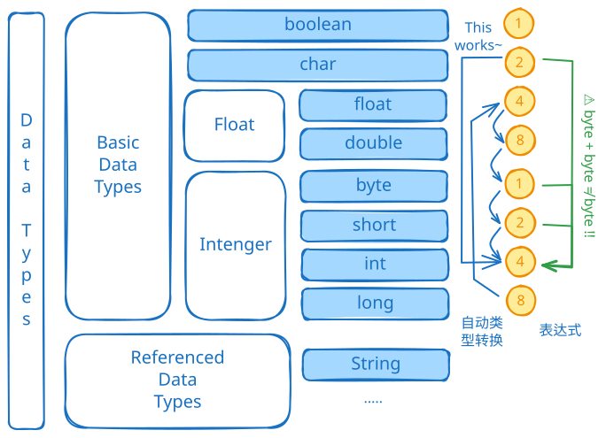

| 类别 | 类型 | 大小 | 说明 |
|---|---|---|---|
| 整型 | byte |
1字节 | -128 ~ 127 |
| 整型 | short |
2字节 | -32,768 ~ 32,767 |
| 整型 | int |
4字节 | -2³¹ ~ 2³¹-1 |
| 整型 | long |
8字节 | -2⁶³ ~ 2⁶³-1 |
| 浮点型 | float |
4字节 | 约±3.403E38，7位小数精度 |
| 浮点型 | double |
8字节 | 约±1.798E308，16位小数精度 |
| 字符型 | char |
2字节 | Unicode字符 |
| 布尔型 | boolean |
1字节 | true 或 false |
注意:
String）char 2字节（Unicode）char 1字节（ASCII）char 4字节（Unicode标量值）Java 的数据类型可以分为两种：基本数据类型和引⽤数据类型。
基础数据类型有：byte，short，int，long，float，double，boolean，char
引用数据类型有：数组，类，接口